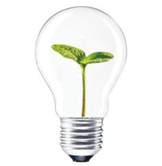

ENERGIA SOLAR FOTOVOLTAICA: COMO FUNCIONA?
A geração de energia elétrica através da radiação solar é a fonte energética mais limpa, sustentável e barata que existe no mundo. Não gera poluição, não emite gases, não faz ruídos, não exige espaços úteis pois aproveita os telhados, tem pouca manutenção, gera muitos empregos, tem preços são acessíveis a todos e traz o retorno do investimento em poucos anos.
O princípio de funcionamento da energia solar fotovoltaica se dá quando partículas de luz solar (fótons) colidem com os átomos de silício presentes no painel solar. Essa colisão gera um deslocamento dos elétrons, que cria uma corrente elétrica contínua. Essa corrente é chamada de energia solar fotovoltaica.
Se não houver consumo ou se a energia gerada for excedente ao consumo, o excedente será enviado automaticamente para rede da distribuidora de energia elétrica da Copel, que devolverá ao cliente para ser utilizada a noite. Esse excedente poderá ser compensado em até 60 meses, ou 5 anos, conforme a legislação em vigor.
COMO FUNCIONA O SISTEMA DE ENERGIA SOLAR FOTOVOLTAICA?O esquema de funcionamento da energia solar fotovoltaica baseia-se na utilização de painéis solares que captam a luz e geram energia elétrica por meio do efeito fotovoltaico. Essa eletricidade é convertida pelo inversor solar, de corrente contínua para alternada, e, então, a energia é distribuída.
Existem 3 formas de funcionamento de um sistema de energia solar fotovoltaico, que varia pelo tipo de sistema instalado:
1. Sistema de energia solar conectado à rede (on-grid);
2. Sistema fotovoltaico isolado ou autônomo (off-grid);
3. Sistema de energia solar híbrido.
A diferença entre elas é dada apenas pela maneira que se relacionam com a rede elétrica da Copel:
1. O sistema on-grid atua com a inserção de energia diretamente na rede elétrica, enquanto há presença de luz solar no imóvel.
2. O sistema off-grid não está conectado com a rede elétrica da Copel. Funciona por meio de um banco de armazenamento de energia em baterias que mantém o funcionamento do sistema em períodos noturnos ou chuvosos.
3. O sistema híbrido tem sua operação de modo simultâneo, entre on-grid e off-grid, fazendo com que seu trabalho ocorra conectado à rede, enquanto o banco de baterias está carregando, e vice-versa.
Nós nos concentraremos no sistema conectado à rede (on-grid) que é a maneira que à DAHMER SOLAR Engenharia Elétrica realiza as conexões dos sistemas fotovoltaicos dos clientes à rede elétrica da Copel.
COMO FUNCIONA O SISTEMA FOTOVOLTAICO CONECTADO À REDE ON-GRID?Veja o esquema de funcionamento do sistema de energia solar:
O Painel Solar reage com a luz do sol e produz energia elétrica (energia fotovoltaica). Os painéis solares, instalados sobre o seu telhado, são conectados uns aos outros e então conectados no seu Inversor Solar:
1. O Painel Solar gera a energia solar fotovoltaica 2. ProteçõesPara previnir a queima dos equipamentos por descargas elétrica atmosféricas conhecidos como raios, o sistema conta com proteção específica que visa direcionar para a terra qualuer surto desta natureza.
3. O Inversor Solar converte a energia solar para a sua casa ou empresaUm inversor solar converte a energia solar dos seus painéis fotovoltaicos de corrente contínua (CC) para corrente elétrica alternada (CA). Ou seja, o inversor solar transforma a corrente em energia elétrica que pode ser usada em sua casa ou empresa para a TV, computador, máquinas e qualquer equipamento elétrico que você precise usar.
4. A Energia Solar é distribuída para sua casa ou empresaA energia elétrica que sai do inversor solar vai para o seu “quadro de luz” e é distribuída para sua casa ou empresa.
Como esta energia é gerada por você, não haverá custo na utilização desta. Portanto, é possível reduzir a energia que você compra da distribuidora.
5. A Energia Solar é usada por utensílios e equipamentos elétricosA energia solar pode ser usada para TVs, Aparelhos de Som, Computadores, Lâmpadas, Motores Elétricos, ou seja, tudo aquilo que usa energia elétrica e estiver conectado na tomada. Não é necessário nenhum outro equipamento para utilizar a energia solar, pois ao sair do inversor solar ela já está compatível com a energia da Copel.
6. O excesso de energia vai para a rede da Copel gerando créditosApós a instalação do seu sistema de energia solar, o seu relógio de luz antigo vai ser substituído por um relógio de luz novo que é “bidirecional” (mede a entrada e a saída de energia).
Esse relógio de luz mede a energia da Copel que é consumida quando não tem sol e a energia solar gerada em excesso quando há uma produção maior que o consumo e é injetada na rede da Copel.
7. Rede elétrica da concessionariaA energia solar que vai para a rede vira créditos de energia. Os Créditos de Energia são medidos em kWh. Para cada kWh gerado em excesso pelo seu sistema solar fotovoltaico você recebe 1 crédito de kWh para ser consumido nos próximos 60 meses.
Desta forma, no final do mês quando você receber a sua conta de luz, você vai ver quanto de energia consumiu da rede e quanta energia injetou na rede. Se injetar mais na rede do que consumiu, você terá créditos de energia, garantindo mais economia na sua conta de luz.
Assim: você produz energia limpa com a luz do sol e reduz a sua conta de luz.
O QUE É GERAÇÃO DISTRIBUIDA?A Geração Distribuída (GD) é a produção de energia elétrica realizada junto ou próxima do consumidor. Podendo ser instalada na própria residência do consumidor para compensar seu consumo, ou ainda instalado em outra unidade consumidora que esteja no mesmo nome do consumidor e compensar o consumo das duas, chamado de autoconsumo remoto.
QUEM FAZ REGULAMENTAÇÃO DA GERAÇÃO DISTRIBUIDAOs créditos de energia são regulamentados pela ANEEL (Agência Nacional de Energia Elétrica) conforme a NR 482 de 2012 onde possui as regras que permitem a chamada microgeração distribuída, que é a possibilidade de conexão de pequenas usinas solares pertencentes a um cliente final, diretamente a rede elétrica da Copel.
QUEM PODE ADERIR?Qualquer Unidade Consumidora de energia elétrica conectada a qualquer Concessionária distribuidora, seja ela urbana ou rural, residencial, comercial ou industrial, ou seja: todos os consumidores ligados a rede elétrica da Copel podem aderir.
TEM TAMANHO MÍNIMO OU MÁXIMO?Não. Instalamos para qualquer consumo que você tiver, dimensionamos e projetamos conforme o seu consumo.
O QUE É MICROGERAÇÃO E MINIGERAÇÃO DISTRIBUÍDA?Sistemas menores que tenham potência de geração instalada de até 75kW são chamados de microgeração e sistemas maiores do que 75kW até 5GW são chamados de minigeração distribuída.
A diferença básica é que na microgeração não será preciso instalar uma subestação na Unidade Consumidora, com ela o único custo será o sistema fotovoltaico, o resto incluindo o medidor bidirecional é por conta da Copel.
A maioria dos consumidores residências, rurais e comerciais se enquadram como microgeração.
CONSIGO DESCONTAR 100% DO VALOR DA FATURA?Não. A Copel cobra um valor mínimo em kWh, chamado de taxa de disponibilidade que não poderá ser descontado. Essa taxa é de 30kWh para ligações monofásicas, 50 kWh para ligações bifásicas e 100kWh para ligações trifásicas.
COMO COMEÇAR?Se você tiver interesse em reduzir seus custos e ser sustentável, a DAHMER SOLAR Engenharia Elétrica oferece a solução completa: fazemos o dimensionamento do sistema; o projeto elétrico; emitimos a ART e demais documentos necessários; instalamos o sistema; protocolamos todos os documentos junto com a Copel.
Você não terá trabalho nenhum.
Então o que é preciso fazer?Basta apenas enviar a Fatura de energia elétrica que nós faremos um orçamento sem compromissos e sem custos. Neste orçamento está o dimensionamento, o custo do sistema e o tempo de retorno do investimento, ou seja, em quanto tempo o dinheiro investido no sistema retornará pela economia no pagamento da fatura da Copel. Caso aprove o orçamento nós nos encarregaremos de todos os procedimentos.
Vale lembrar:
A DAHMER SOLAR Engenharia Elétrica tem o menor preço, a melhor qualidade e a maior rapidez na instalação do sistema.
Venha ser sustentável conosco e ajude a preservar os recursos naturais do nosso planeta.